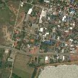
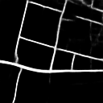
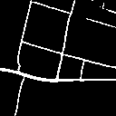
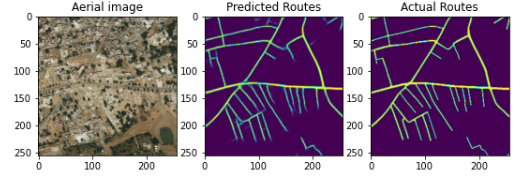
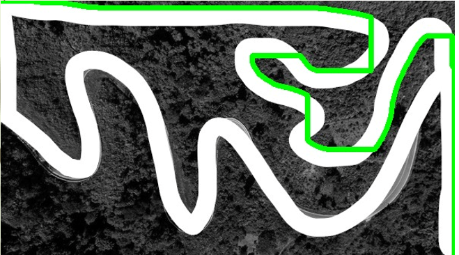
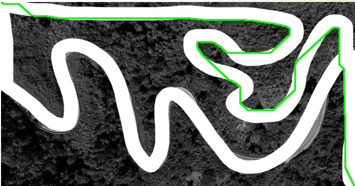
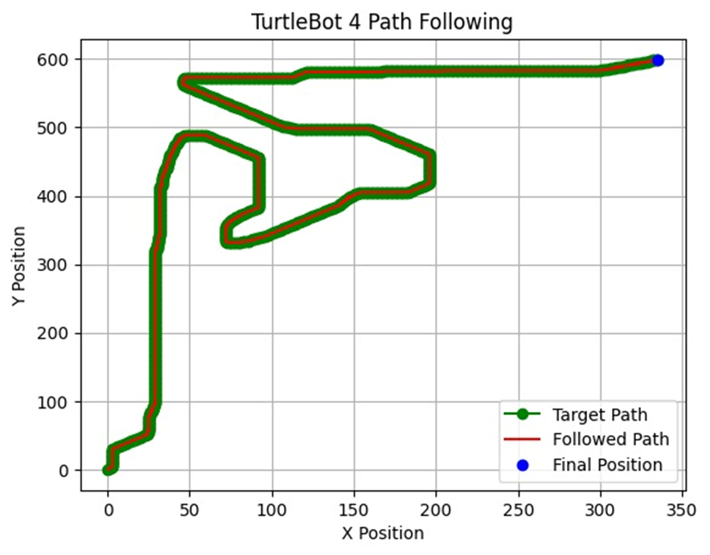
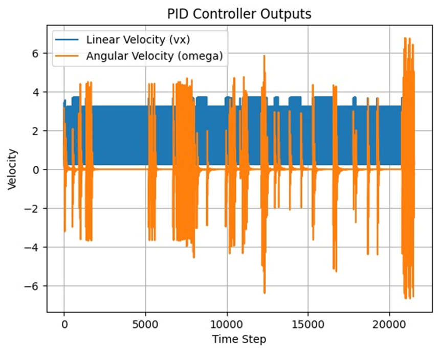

Problem & pipeline
Given an aerial image I, a start point S, and a goal point G in image coordinates, compute a route along the available paths and make a ground robot follow it. The project connects learned visual perception to discrete search and feedback control. [P:2–3,25]
- 01 / Perception
U-Net
Aerial image → predicted road mask
I → p(road | I) - 02 / Planning
A* search
Traversable grid + start / goal → path
(M, S, G) → P - 03 / Control
PID controllers
Waypoints + robot pose → motion commands
(P, pose) → (v, ω)
Geometric assumption
The presentation assumes that the aerial image is captured parallel to the ground, so pixel distances are proportional to ground distances. Route selection therefore begins in the image frame; coordinates must then be scaled and aligned to the robot’s operating frame. [P:2,28]
Road segmentation with U-Net
U-Net’s encoder gathers spatial context while its decoder restores a dense segmentation map. Skip connections pass encoder features to the corresponding decoder level, helping preserve local detail. This project applies the architecture to road extraction from aerial images. [U] [P:5,11–13]
Inside our road-segmentation network
This is the project’s trained RouteGenerator2 model. Choose an aerial image, follow its encoder and decoder, and inspect the feature maps computed in your browser. [B] [C]



The trained network loads when this explorer comes into view. Its first pass downloads an 8.66 MB checkpoint.
Map 27 · saved output from this checkpointThe implemented architecture
Select a block to inspect it. The guide replays the latest forward pass; feature maps stay fixed until a new input is run. On a narrow screen, scroll the diagram or use the layer selector.
The first block learns local image patterns at full resolution. Its 16 channels also feed the last decoder block through a skip connection.
Feature maps come from the actual trained weights. Each channel is scaled separately for visibility; values below each map show the original activation range.
Convolution blocks Two 3 × 3 convolutions with “same” padding, each followed by batch normalization and ReLU. Pooling reduces resolution; the spatial dimensions stay fixed within each block.
Skip connections Concatenate the corresponding encoder features with the upsampled decoder features along the channel axis. They carry spatial detail directly into reconstruction.
Checkpoint, preprocessing, and implementation details
The saved model contains 2,164,593 parameters (2,161,649 trainable; 2,944 batch-normalization statistics). Its dropout rate is 0.07, matching the notebook’s model-instantiation cell; slides 11–12 describe the function’s 0.1 default. Dropout is disabled for inference, and batch normalization uses the saved moving statistics with ε = 0.001.
The browser export copies all saved model weights at their original float32 precision and omits optimizer state. Repository samples are resized with OpenCV to 128 × 128 RGB and retain pixel values in 0…255, following the JPEG inference code. The saved model and inference node specify 128-pixel inputs; the training notebook also contains later 256-pixel loading cells. A supplied image is resized locally by the browser and follows the same RGB value range.
The mask panel applies only p > threshold. The project’s subsequent morphological processing and A* planner are described below. These checkpoint predictions on repository images demonstrate computation; they are not held-out evaluation results. Checkpoint provenance ↗ [B] [C]

Example 01 · Compare the aerial image, predicted routes, and reference routes in the original figure.
Making a mask usable for search
The linked integration code thresholds predictions at 0.5, applies a 3 × 3 dilation, runs its iterative erosion-based routine named skeletonize, then performs 5 × 5 morphological closing and Gaussian smoothing before a final binary threshold. White pixels become traversable grid cells. These operations bridge segmentation and planning. [C]
A* path planning on the road map
The road mask defines a graph: traversable pixels are nodes, and allowed moves connect neighbouring nodes. A* prioritizes a node using its accumulated path cost g plus a heuristic estimate h of the remaining distance. [P:15–18]
g(n): cost from the start · h(n): estimated cost to the goal
| Neighbourhood | Allowed moves | Step cost |
|---|---|---|
| 4 neighbours | Up, down, left, right | 1 |
| 8 neighbours | Cardinal and diagonal moves | 1 cardinal; √2 diagonal |
Example calculation
With four neighbours, moves stay on the grid axes. Eight neighbours also allow diagonals, each costing √2. Use the controls to compare paths on the same mask.
Heuristic in the slides and in the code
Slide 18 describes the octile heuristic, h = √2 · min(Δx, Δy) + |Δx − Δy|. The linked ROS implementation uses Euclidean distance, h = √(Δx² + Δy²), and eight-neighbour movement. Both are admissible for this unit grid with diagonal cost √2; the interactive example follows the code. Slide 17’s wording conflicts with the four-direction baseline on slide 15. The comparison here follows slides 15, 18, and 19. [P:15–19] [C]
Initial path

Original figure · slide 17
Modified path

Original figure · slide 19
PID path following
The robot follows a sequence of waypoints using separate linear and angular PID controllers. The presentation introduces heading and cross-track correction; the linked ROS node implements distance-to-waypoint and heading-error feedback. Odometry supplies the robot position and orientation, and the controller publishes linear.x and angular.z in a Twist command. [P:20–23] [C]
Next waypoint
(x*, y*)−Current pose
(x, y, θ)ed = √[(x* − x)² + (y* − y)²]
Linear PID → veθ = wrap[atan2(y* − y, x* − x) − θ]
Angular PID → ωIk = clip(Ik−1 + ekΔt, −10, 10)Dk = clip((ek − ek−1)/Δt, −10, 10)
| Controller | Kp | Ki | Kd | Command limit |
|---|---|---|---|---|
| Linear | 1.0 | 0.02 | 0.2 | 0 to 0.5 m/s |
| Angular | 2.0 | 0.15 | 0.2 | −1.9 to 1.9 rad/s |
Code settings: Δt = 0.1 s; advance to the next waypoint when distance error < 0.1 m; stop when the waypoint sequence is exhausted. These are implementation values, rather than results of a reported tuning study. [C]
Coordinate conversion and integration
The linked script rescales path coordinates to a configured room extent of 20 × 40 metres and retains every thirteenth path point. The presentation identifies coordinate scaling, model-loading compatibility, and tuning six gains across the two controllers as practical challenges. Frame alignment and waypoint spacing therefore matter alongside the planner itself. [C] [P:28]
Results & original evidence
The presentation documents segmentation outputs, a comparison of planned paths, controller outputs, and a target-versus-followed trajectory. It also includes a physical robot demonstration. Together, these provide qualitative evidence of the integrated perception, planning, and control workflow. [P:13,17–19,23,26]

View the reported controller-output plot

What the evidence establishes
The supplied presentation demonstrates the workflow through examples and recordings. It does not report a held-out segmentation score, planning-runtime benchmark, success rate, or RMS tracking error. The page therefore presents the original qualitative evidence without assigning unreported performance numbers.
Scope, challenges & next steps
Challenges reported by the team
- Differences between the U-Net training environment and the model-loading environment.
- Robot rotation during coordinate scaling in simulation.
- Tuning the six parameters of the linear and angular PID controllers.
Extensions proposed in the presentation
- More efficient path planning and dynamic replanning.
- Drone-assisted map updates coordinated with the ground robot.
- Camera and depth sensing, with Kalman filtering for sensor fusion.
Proposed future work. [P:29]
The image-derived grid represents road availability. The inspected planner checks destination-cell traversability for diagonal moves, with no explicit robot-footprint inflation or turning-radius constraint. Sensor fusion and live map updates remain proposed extensions. These limits matter when interpreting a visually plausible route as a physically executable one. [C] [P:29]
Sources & attribution
Project claims and original figures come from the team presentation. Implementation details are attributed to the linked code. The live U-Net uses the project checkpoint; redrawn diagrams and the synthetic A* example explain the methods.
- PTeam 8. Path Optimization for Wheeled Robot in Unmapped Environments.
Aditya Mohan, Indra Kumar, Siddharth Jain, and Thandava S. CP 214, Indian Institute of Science. Supplied 31-slide final presentation. The public copy matches the attached file.
View project presentation ↗ Download PPTX ↓ - CProject implementation. ROS robot-control node and U-Net notebooks.
The repository named on slide 1 defines the U-Net, JPEG preprocessing, mask processing, eight-neighbour A*, path scaling, and the PID controllers. Inspected at commit
View the implementation repository ↗ U-Net notebook ↗54c9a54; its saved checkpoint drives the live explorer. - BProject checkpoint and TensorFlow.js browser export.
Original trained checkpoint ↗ TensorFlow.js model loading ↗ Export provenance ↗ML Model/RouteGenerator2.h5at the inspected implementation commit. Full float32 model weights are served with this page; no optimizer state is included. The browser executes convolution, pooling, batch normalization, learned upsampling, concatenation, and sigmoid locally using TensorFlow.js 4.22.0. - LStanford CS231n. Live convolutional-network visualization.
Interaction reference for inspecting activations during a browser forward pass. The U-Net architecture, weights, and road predictions shown here come from this project’s implementation.
View the live-network reference ↗ - URonneberger, O., Fischer, P., & Brox, T. (2015).
U-Net: Convolutional Networks for Biomedical Image Segmentation. Architectural background for the encoder, decoder, and skip connections. The road-segmentation application and displayed outputs belong to this project.
Read the U-Net paper ↗ - RNormey-Rico, J. E., Alcalá, I., Gómez-Ortega, J., & Camacho, E. F. (2001).
Mobile robot path tracking using a robust PID controller. Control Engineering Practice, 9(11), 1209–1214. Background reference listed by the team on slide 30.
DOI ↗ - VAmidi, A., & Amidi, S. CS 230 convolutional neural networks cheatsheet.
Visual reference supplied for the page’s concise diagrams and paired technical explanations.
View the visual reference ↗